Mixtape Magazine
MIXTAPE MAGAZINE is Syracuse University’s premiere hip-hop music and culture magazine featuring work entirely done by students. As the magazine’s Head of Photography and Videography I am in charge of planning and executing all of the photoshoots featured within the magazine as well as videos promo posted throughout various social media platforms.
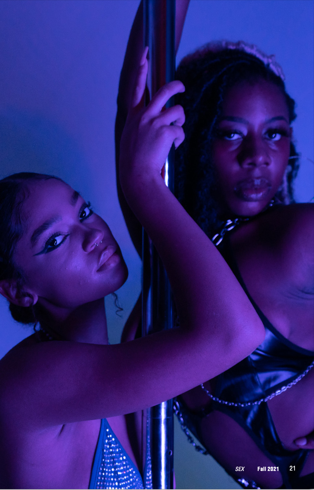
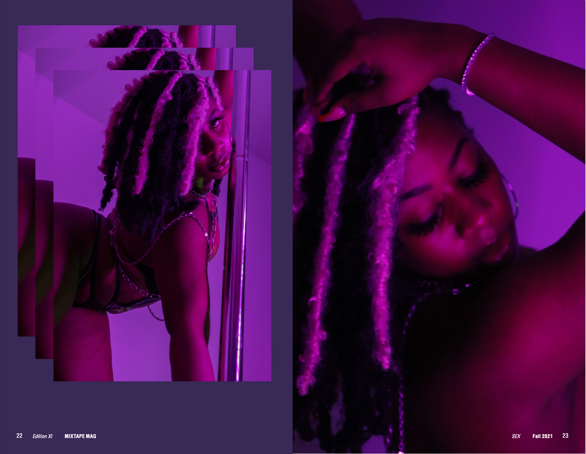
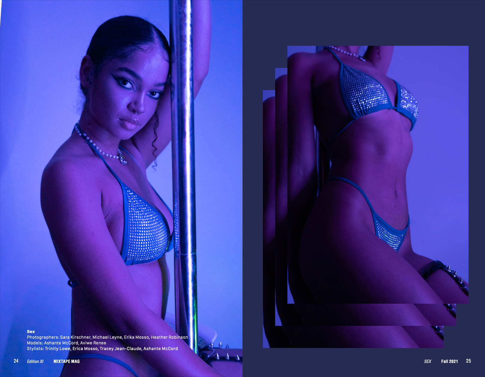
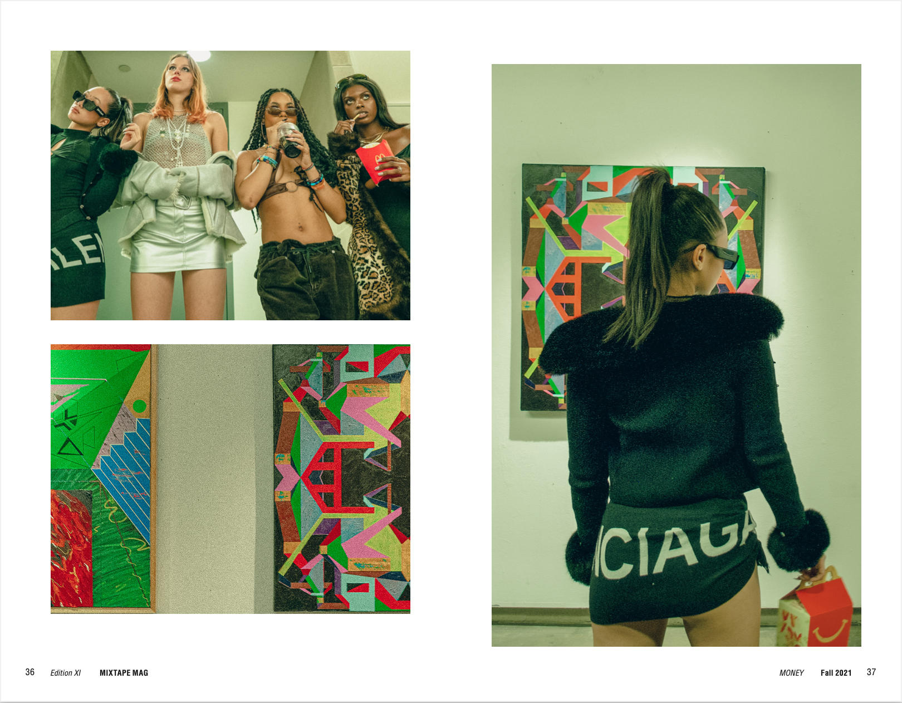
 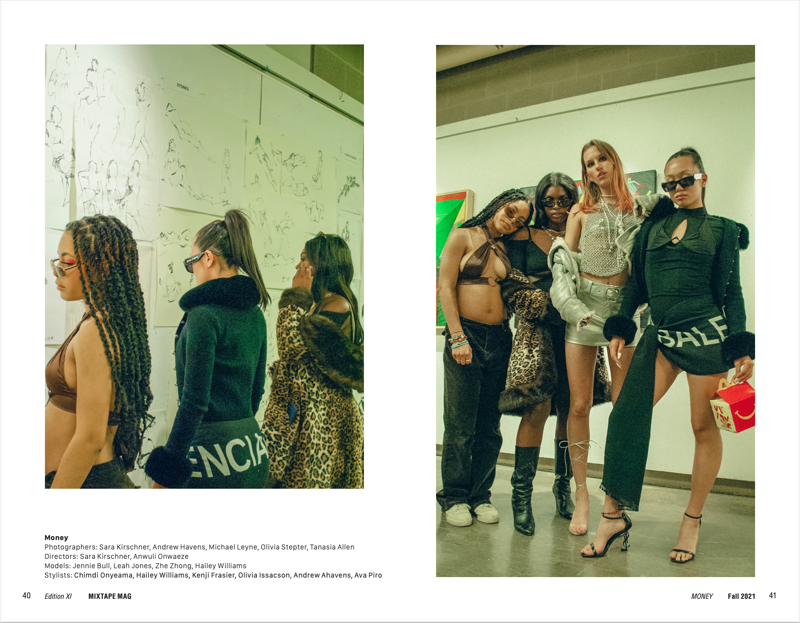
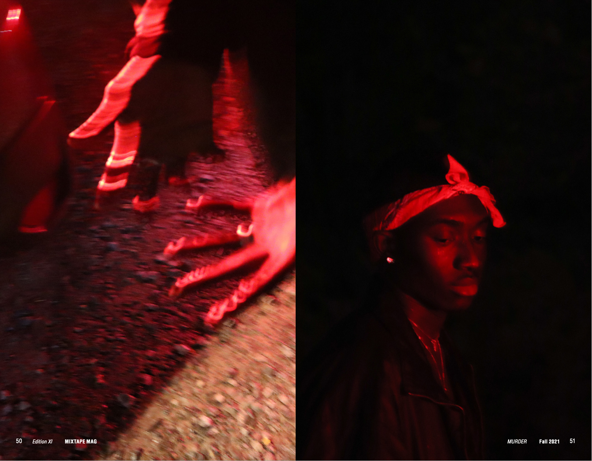
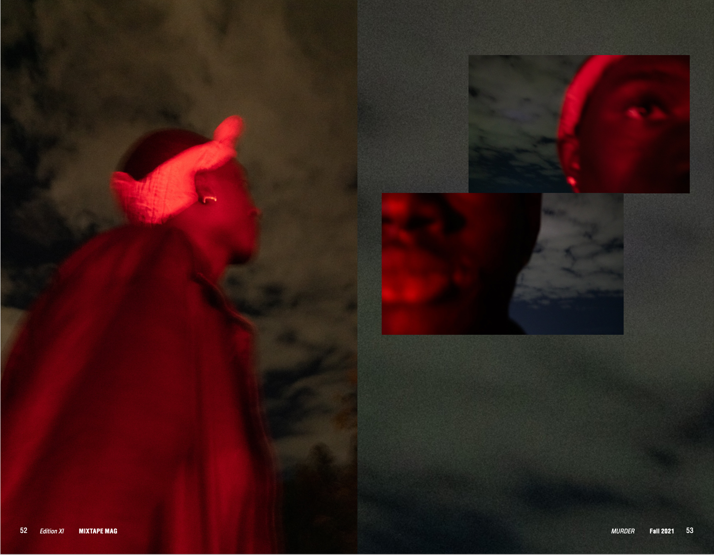
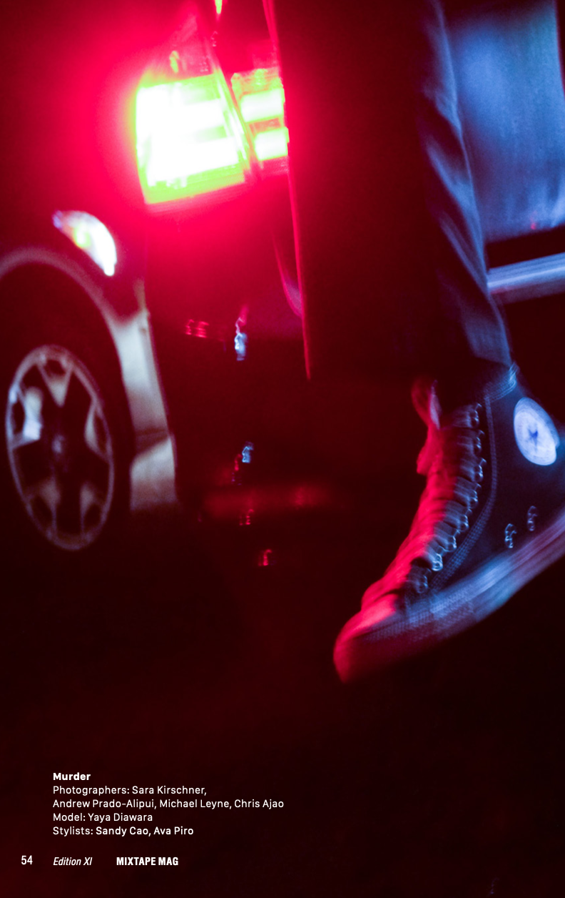
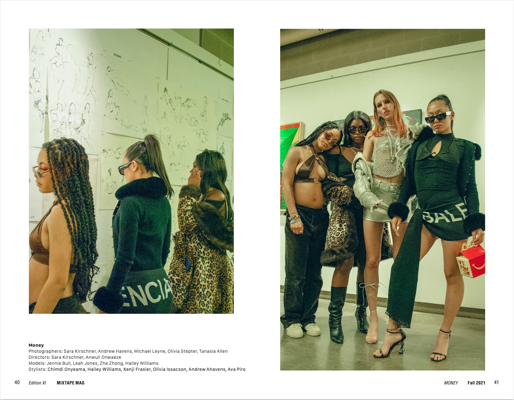
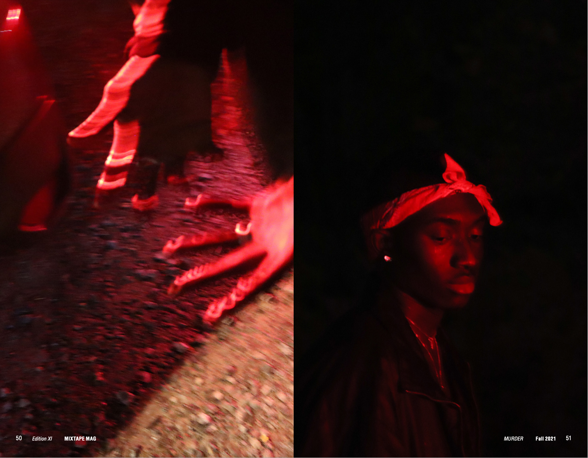
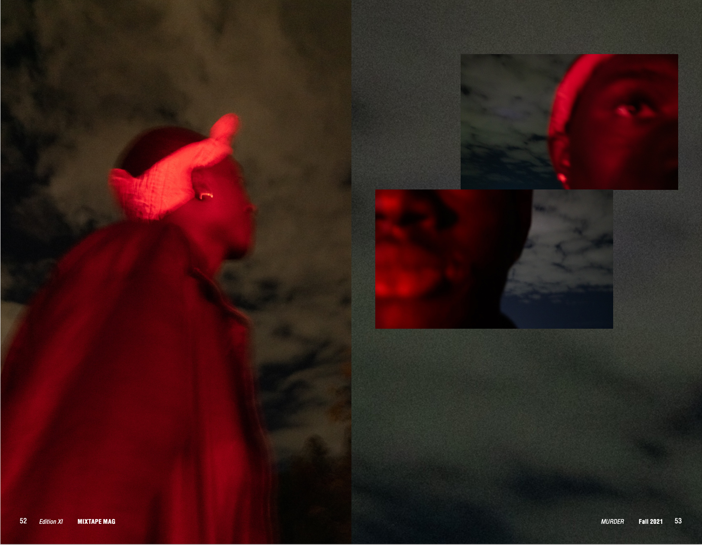
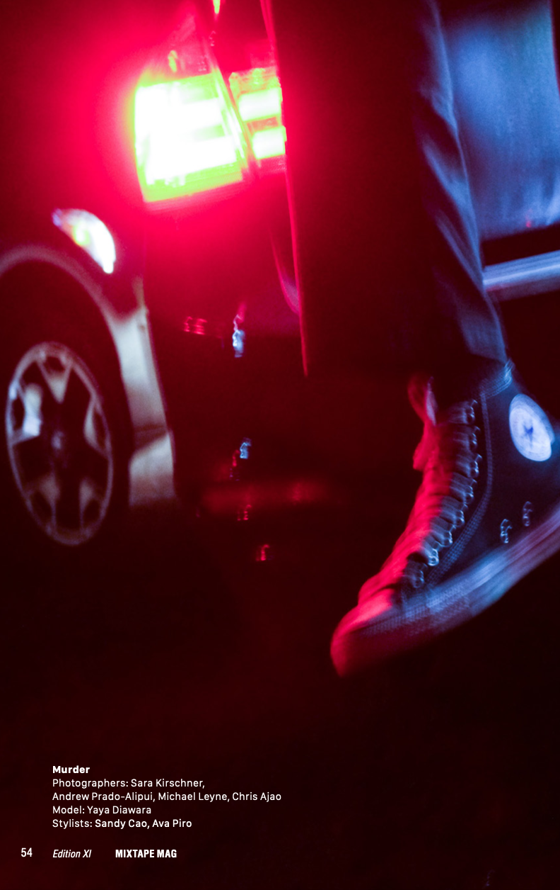